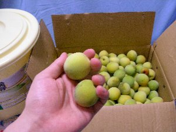
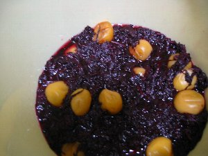
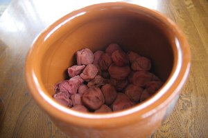
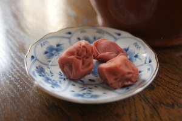

梅干し作り | 2006年 |
|---|---|
| 《6月も下旬》 梅干しって買うと高いけど、自分で作ったら安いかな〜？と思い立って、梅干しを作ってみることにしました。 「別に毎年作ってるけど」と言うあなたも、初心者があたふたする様子を面白可笑しく見て頂ければと、書いてみました。 さて、ネットで調べると、色々な作り方が出てきたので、その一つを参考にさせて貰い、早速スーパーにて生梅を購入。 なお、梅干し作りの詳細は、他のページを参考にして貰うとして、ココでは細かい箇所は割愛させて頂きます。 | |
 買ってきた梅干しセット！ |  このぐらいが２Lらしい |
| 今回は初めてだし、上手く行くか分からないため、安い地元静岡産の梅を使用（２Lサイズ）。４㎏780円。そして粗塩を購入。600ｇx2ケで246円。 ホームセンターで漬物用容器を398円で購入。 ちょっと青みがかっていたので、しばらく放置（2日間）! 完熟した奴を買ってくれば良いんだけど、箱の中だったし分からないやい！ 仕事行く前に梅干しを水にひたし、帰ってきてから、洗ってヘタを爪楊枝で取り除き、漬け物樽に塩と共に並べていく。 危なそうな梅を取り除き、3.4㎏となりました。（約134個） 塩分は、失敗しない程度に１６％として550g。（なんだ、一袋で足りたジャン） 重しは６㎏（1.76倍）のやつが有ったので、それをビニールで包んで載せました。 さて、これで梅酢が上がってくれば、危険度は下がるわけですが・・・（重しは倍が基本らしいけど、1.5〜位で良いんだって） （梅酢が素直に出てくれば良いんだけど、そうでないとカビの発生が大なんだって。 塩が少なかったり、傷んだ梅を使ったり、 重しが少なかったりすると、梅酢は一杯出てこない） | |
 塩はたっぷりと。今回は１６％で。 |  見てみて！3日でこんなに梅酢が！ |
| ヘタを取っているときに、母親が 「ウチも前は梅干し作っていたけど、梅干し作りに失敗した年は不幸が有るので、止めたよ。 あの時はおばちゃんが・・・この時は、ばあちゃんが・・・」 って・・・・・・そう言うことを、今言わないでくれ〜〜(゜_゜;) 《24時間後》 恐る恐る、覗いて見ると・・お〜、梅酢上がってます。 （写真は3日後） カビもなさそうな感じで、良いですね。 《3日後》 良い感じで梅酢が上がっているので、ココで重しを軽くしました。 約2㎏へ。 《7月上旬》 さて、そろそろ色つけのための赤紫蘇を入れる時期です。スーパーでも出回っています。 しかし、7月は、恒例の試験月間！ とても赤紫蘇を洗ったり、塩もみしたりする時間は有りません〜〜 そこで、スーパーにて「入れるだけの赤紫蘇」を買ってきて、ホントに入れるだけ。 一袋398円 | |
 入れるだけの赤紫蘇（手抜き） |  これで良いのか？取りあえず入れてみる |
| 今年の夏は雨続きで、全然晴れやしない。 土用だって雨ばかり。カラッとした晴れ無いよ。 ついに八月半ばまでずれ込み、お盆の頃にやっと天日干し。 100均で買ってきたスダレを引き、その上に梅干しを並べます。 おお〜意外と良い色に成ってるではないですか！ 色付けに使用した赤紫蘇も干してカラカラにして、ゆかりとします。 梅干しは、この時点で５〜１０％出来の悪い奴が出来るそうで、多分にもれず私のも、そのぐらい有りました。 なんか黒っぽく成ってしまった奴とか、変に柔らかい奴。 しょうがないのでこれは、梅びしお行きですね。 漬けた梅酢も他の漬け物とかに転用出来るようで、ホント、梅干し作りって捨てるところが無いよね。 昔の人は良く考えてあるものです。 今回は赤紫蘇をパックの出来合いモノを買ってしまったが、ちゃんと作ると、大きな葉っぱの赤紫蘇が出来るそうな。これをおむすびに巻くと、メチャ美味しいそうで、来年はチャレンジしたいな〜〜 | |
 美味そうな赤でしょう？ 合成着色料は無使用です♪ |  後でお弁当のご飯にかけたけど、ゆかり美味しいです。 |
| 半年寝かせて、2月。 梅干し壺を覗くとちゃんと梅干し出来てました！！ すげ〜〜、俺でも出来るジャン！！ なんか、艶っぽくないけど、味は普通の梅干しです。 結構いい加減に作っても出来るモノですね。 来年（既に今年だか）もやろうかな？ 今度は赤シソも植えて。 | |
|  完成〜〜(o^^o) |  うう〜ん、酸っぱくて良い感じに出来ました♪ |
| 写真＆コメント ｂｙ べっしー | |